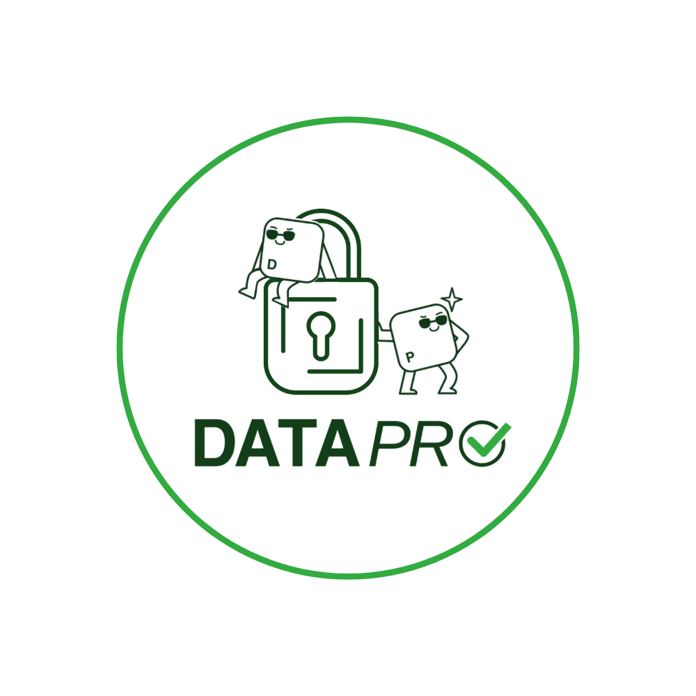

Dowiedz się, ile danych osobowych udostępniasz online - i jak ryzykowne mogą być Twoje cyfrowe nawyki.

Poniżej znajduje się pełne wyjaśnienie zagrożeń związanych z czynnościami wykonywanymi i udostępnianymi online. Nie wszystkie działania są równie ryzykowne - kontekst ma znaczenie, więc to, gdzie coś publikujesz, może mieć duże znaczenie. Na przykład udostępnianie swojej lokalizacji prywatnie znajomym różni się znacznie od publikowania jej publicznie w transmisji na żywo. Dlatego też podzieliliśmy to na osobne tabele w zależności od rodzaju używanej platformy.
Sprawdź poniższe linki, aby zapoznać się z każdą kategorią bardziej szczegółowo:
Im więcej zrozumiesz, tym większą będziesz mieć kontrolę nad swoim śladem danych. Bądź tam bezpieczny!
| Aktywność | Poziom ryzyka | Dlaczego może to być ryzykowne |
|---|---|---|
| Czajenie się / czytanie | Niski | Aktywność pasywna; żadne dane nie są udostępniane. |
| Polubienia / reagowanie | Niski | Udostępniane są minimalne dane; wzorce mogą być nadal śledzone. |
| Śledzenie kont / subskrybowanie | Niski | Może ujawniać zainteresowania, ale ogranicza bezpośrednią ekspozycję. |
| Udostępnianie linków do treści zewnętrznych | Umiarkowany | Może wskazywać poglądy i zainteresowania; może zawierać linki śledzące. |
| Komentowanie | Umiarkowany | Ujawnia opinie; może zawierać dane osobowe w sposób niezamierzony. |
| Publikowanie treści | Umiarkowany | Może zawierać dane identyfikacyjne lub wzorce zachowań. |
| Wiadomości (prywatne czaty/DM) | Umiarkowany | Prywatne, ale nadal przechowywane i potencjalnie narażone. |
| Tworzenie/dołączanie do publicznych grup/wydarzeń | Umiarkowany | Pokazuje zainteresowania, powiązania lub fizyczną obecność. |
| Udział w forach | Umiarkowany | Często trwałe, możliwe do przeszukiwania i potencjalnie identyfikujące. |
| Przesyłanie filmów | Wysoki | Może ujawniać wygląd, głos, otoczenie, tożsamość. |
| Synchronizowanie kontaktów | Wysoki | Udostępnia platformie sieć osobistą użytkownika. |
| Transmisja na żywo | Bardzo wysoki | Ekspozycja w czasie rzeczywistym z dużym potencjałem do nadmiernego udostępniania. |
| Korzystanie z aplikacji opartych na lokalizacji | Bardzo wysoki | Śledzi ruchy i nawyki w czasie rzeczywistym. |
| Oznaczanie osób lub miejsc w postach | Bardzo wysoki | Ujawnia tożsamość, lokalizację i relacje. |
| Rodzaj udostępnianych informacji | Poziom wrażliwości | Dlaczego może to być ryzykowne |
|---|---|---|
| Tylko pseudonim/imię | Niski | Niskie ryzyko bycia zidentyfikowanym lub śledzonym. |
| Imię i nazwisko | Umiarkowany | Łatwiejsze znalezienie użytkownika i innych danych osobowych przez nieznajomych. |
| Adres e-mail | Umiarkowany | Może być używany do śledzenia, spamu lub prób phishingu. |
| Data urodzenia | Umiarkowany | Wykorzystywane w pytaniach zabezpieczających. Może narazić użytkownika na ryzyko kradzieży tożsamości. |
| Opinie lub przekonania (np. polityczne) | Umiarkowany | Mogą być wykorzystywane do profilowania lub kierowania do użytkownika manipulacyjnych treści lub reklam. |
| Szkoła / miejsce pracy | Wysoki | Ujawnia codzienną rutynę i lokalizację, zwiększając ryzyko niechcianego kontaktu lub prześladowania. |
| Numer telefonu | Wysoki | Służy do weryfikacji, ale umożliwia także spam, oszustwa, śledzenie i potencjalne przejęcie konta. |
| Adres domowy | Wysoki | Ujawnia miejsce zamieszkania; ryzyko prześladowania lub fizycznej krzywdy. |
| Historia przeglądania (za pośrednictwem powiązanych kont) | Wysoki | Może stworzyć szczegółowy profil nawyków i zainteresowań użytkownika, który może zostać wykorzystany do manipulacji. |
| Uprawnienia aplikacji innych firm | Wysoki | Umożliwia innym aplikacjom dostęp do danych użytkownika, często przy niewielkiej przejrzystości. |
| Zdjęcia z twarzami | Wysoki | Ryzyko obejmuje nadużycia związane z rozpoznawaniem twarzy i niechcianą identyfikacją. |
| Filmy z głosem/obrazem | Wysoki | Ujawnia wiele osobistych cech i szczegółów, zwiększając ryzyko naruszenia prywatności. |
| Lokalizacja w czasie rzeczywistym | Bardzo wysoki | Może być używany do śledzenia ruchów i aktualnej pozycji, zwiększając ryzyko prześladowania lub fizycznej krzywdy. |
| Dokumenty tożsamości (dowód osobisty/paszport) | Bardzo wysoki | Wysoka wrażliwość; może prowadzić do kradzieży tożsamości lub oszustwa. |
| Rodzaj udostępnianych informacji | Poziom wrażliwości | Dlaczego może to być ryzykowne |
|---|---|---|
| Tylko pseudonim/imię | Niski | Mogą być powiązane z nawykami zakupowymi. Może nie identyfikować użytkownika samodzielnie, ale pomaga zbudować profil. |
| Imię i nazwisko | Umiarkowany | Łatwiejsze kierowanie spamu lub phishingu. |
| Opinie lub przekonania (np. polityczne) | Umiarkowany | Służy do tworzenia szczegółowych profili i kierowania reklam manipulacyjnych. |
| Adres e-mail | Umiarkowany | Podatne na spam/phishing. |
| Adres domowys | Wysoki | Wymagane do celów dostawy, ale stwarza ryzyko w przypadku wycieku. |
| Szkoła / miejsce pracy | Wysoki | Ujawnia codzienną rutynę i lokalizację, zwiększając ryzyko niechcianego kontaktu lub prześladowania. |
| Data urodzenia | Wysoki | Ujawnienie danych zwiększa ryzyko kradzieży tożsamości i włamania na konto. |
| Numer telefonu | Wysoki | Może być wymagany do aktualizacji dostaw, ale jest podatny na oszustwa i próby przejęcia konta. |
| Historia przeglądania (za pośrednictwem powiązanych kont) | Wysoki | Wykorzystywane do wysoce ukierunkowanych reklam i profilowania. |
| Uprawnienia aplikacji innych firm | Wysoki | Zapewnia szeroki dostęp do wrażliwych danych zamówień i kont, często bez wyraźnej kontroli. |
| Zdjęcia z twarzami | Wysoki | Rzadko wymagane do zakupów/usług online - ujawnia tożsamość i może być wykorzystywane do rozpoznawania twarzy lub kradzieży tożsamości. |
| Filmy z głosem/obrazem | Wysoki | Rzadko wymagane w przypadku zakupów/usług online - może ujawnić osobiste otoczenie i nawyki, ryzykując naruszenie prywatności. |
| Lokalizacja w czasie rzeczywistym | Wysoki | Używany do dostaw lub transportu, ale ujawnia ruchy użytkownika, umożliwiając śledzenie lub ryzyko fizyczne. |
| Dokumenty tożsamości (dowód osobisty/paszport) | Bardzo wysoki | Czasami wymagane do weryfikacji tożsamości, ale niezwykle wrażliwe; niewłaściwe użycie może prowadzić do poważnych oszustw lub kradzieży tożsamości. |
| Rodzaj udostępnianych informacji | Poziom wrażliwości | Dlaczego może to być ryzykowne |
|---|---|---|
| Tylko pseudonim/imię | Niski | Zwykle ograniczony dostęp, ale w przypadku wycieku może grozić ujawnieniem tożsamości. |
| Imię i nazwisko | Umiarkowany | Niezbędne do oficjalnego użytku i zwykle dobrze chronione, ale ryzykowne w przypadku wycieku danych. |
| Zdjęcia z twarzami | Niski | Zwykle ograniczony dostęp, ale w przypadku wycieku może grozić ujawnieniem tożsamości. |
| Filmy z głosem/obrazem | Niski | Może ujawnić dane osobowe, jeśli zostaną udostępnione na zewnątrz. |
| Adres e-mail | Umiarkowany | Podatne na phishing, jeśli zostaną naruszone. |
| Szkoła / miejsce pracy | Umiarkowany | Może ujawnić grupę wiekową, kierunek studiów i plan dnia. Może zwiększać ryzyko niechcianego kontaktu. |
| Data urodzenia | Umiarkowany | Ryzyko kradzieży tożsamości w przypadku ujawnienia danych wykraczających poza niezbędne zastosowanie. |
| Opinie lub przekonania (np. polityczne) | Umiarkowany | Może prowadzić do niepożądanego profilowania lub stronniczości, jeśli nie zostanie zachowana poufność. |
| Numer telefonu | Umiarkowany | Ryzyko niewłaściwego wykorzystania w przypadku ujawnienia - podatność na spam/oszustwa. |
| Adres domowy | Umiarkowany | Wrażliwe informacje; ujawnienie może prowadzić do zagrożeń fizycznych lub oszustw. |
| Historia przeglądania (za pośrednictwem powiązanych kont) | Umiarkowany | Może ujawnić nawyki uczenia się lub obszary zainteresowań - może być wykorzystane do profilowania lub inwazyjnego targetowania. |
| Uprawnienia aplikacji innych firm | Umiarkowany | Może przyznawać zewnętrznym aplikacjom dostęp do danych osobowych/uczenia się, ryzykując ujawnienie, jeśli aplikacje są niewłaściwie używane. |
| Lokalizacja w czasie rzeczywistym | Umiarkowany | Może ujawnić miejsce pobytu w przypadku niewłaściwego postępowania - zwiększone ryzyko niechcianego kontaktu lub nękania. |
| Dokumenty tożsamości (dowód osobisty/paszport) | Umiarkowany | Muszą być bezpiecznie przechowywane; wycieki grożą kradzieżą tożsamości lub oszustwem. |
| Rodzaj udostępnianych informacji | Poziom wrażliwości | Dlaczego może to być ryzykowne |
|---|---|---|
| Tylko pseudonim/imię | Niski | Często ponownie wykorzystywany na różnych platformach; może stać się rozpoznawalny. |
| Imię i nazwisko | Wysoki | Czasami wymagane do rejestracji, choć zwykle ukryte. Otwarte udostępnianie zwiększa ryzyko niechcianego kontaktu/ujawnienia. |
| Data urodzenia | Umiarkowany | Używany do weryfikacji wieku, ale może zostać wykorzystany w przypadku wycieku. |
| Opinie lub przekonania (np. polityczne) | Umiarkowany | Mogą pojawiać się na forach lub czatach - mogą być rejestrowane lub wykorzystywane przeciwko użytkownikowi. |
| Adres e-mail | Wysoki | Cel phishingu i spamu. |
| Szkoła / miejsce pracy | Wysoki | Może zdradzać wiek lub codzienne nawyki, zwiększając ryzyko prześladowania lub niechcianego kontaktu. |
| Numer telefonu | Wysoki | Może umożliwiać oszustwa lub nękanie. |
| Historia przeglądania (za pośrednictwem powiązanych kont) | Wysoki | Wykorzystywane do targetowania i profilowania. |
| Uprawnienia aplikacji innych firm | Wysoki | Zapewnia dostęp do danych gier w różnych usługach; ryzyko w przypadku wycieku lub niewłaściwego użycia. |
| Zdjęcia z twarzami | Wysoki | Ryzyko ujawnienia tożsamości. |
| Filmy z głosem/obrazem | Wysoki | Ujawnia szczegóły tożsamości w świecie rzeczywistym. |
| Adres domowy | Bardzo wysoki | Rzadko wymagane - poważne zagrożenie prywatności w przypadku wycieku. |
| Lokalizacja w czasie rzeczywistym | Bardzo wysoki | Ujawnia fizyczną lokalizację użytkownika w czasie rzeczywistym, co może zagrozić jego prywatności i bezpieczeństwu. |
| Dokumenty tożsamości (dowód osobisty/paszport) | Bardzo wysoki | Może być wykorzystywany do weryfikacji wieku, ale jest krytyczny, jeśli zostanie naruszony. |
